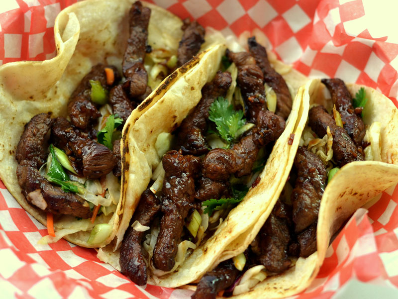

Korean Short Rib Tacos

Description
These are my favorite tacos hands down. I had my first korean short rib taco from a food truck named The Kogi Truck.
A Korean/Mexican Fusion.
This recipe i learned from chef Roy Choi himself(The Owner). Roy Choi has a cooking show on Netflix that has piqued my interest in gourmet cooking.
Ingredients
- 3 lbs of bone-in short rib
- 8 cloves of garlic
- 1 cup soy sauce
- 1/2 cup mirin
- 1/2 cup rice wine vinegar
- 1/2 cup dark brown sugar
- 2 tsp sesame oil
- 1/2 tsp cumin
- 1 lime juiced
- salt to taste
Steps
- You have two choices when it’s time to prepare the rib meat for cooking on the Memphis. Both work well so it’s up to you. The first method requires using a flat, cast iron griddle pan. Cut the rib meat off the small flat bones then cut the beef into thin strips. If you don’t have a flat griddle pan then simply leave the Korean cut flat ribs alone in one piece.
- To prepare the marinade, mix together the soy sauce, rice wine vinegar, mirin or sherry, brown sugar, sesame oil, garlic, ginger, cumin. Divide this mixture into two equal portions. Place the short ribs (or rib meat strips) into a plastic bag with a tight seal and pour one portion of the marinade over the meat. Seal the bag and refrigerate, turning the bag over every once in a while. The meat should marinate for at least three hours, but overnight is preferable.
- Pour the remainder of the marinade mixture into a small saucepan. Add the Sriracha hot sauce and heat the mixture over medium high heat until it begins to boil. Lower the heat and simmer the sauce until it thickens. Remove from heat and set aside to cool.
- Korean Style Slaw: Mix together the shredded cabbages, carrot, cilantro, and scallions. Combine the remaining ingredients and pour over the cabbage mixture. Toss to evenly coat the slaw with the dressing. Refrigerate until ready to assemble the tacos.
- Meat cooking method #1: Preheat the Memphis Pellet Grill to 650 F (700 F is the highest setting on some models). If you are using a flat cast iron griddle pan, place it inside the Memphis so it pre-heats with the grill. When the Memphis reaches temperature take out the EZ-Access Hatch and replace it with the Direct Flame Insert. Turn the ITC to the Open Flame 2 (OF-2) option and slide the grills back into place. Move the flat cast iron griddle pan to the centre of the lower rack (directly above the Direct Flame Insert). Brush the griddle with oil and spread half the meat strips on the griddle surface. Be careful not to overcrowd the meat strips. Using a spatula, move the slices around, turning them over as they cook. It will only take 3 or four minutes to grill the rib meat strips. Remove from heat and wrap in foil to keep them warm while you cook the remaining rib meat strips.
- Meat cooking method #2: Once you get the Memphis pre-heated and have the Direct Flame Insert in place simply lay half of the ribs on the lower rack overtop this cooking area. Grill for 3 or 4 minutes per side. Remove from the grill when done and wrap in foil while you cook the remaining ribs. When all the ribs are done, cut the meat from the bones and into thin strips. Keep warm.
- Assemble the tacos: Turn the ITC to the OF-1 setting. Place two or three of the corn tortillas on the grill for 1 minute. Flip them over and leave for another minute and remove from the grill. Keep the tacos warm while you heat the remaining tacos in batches. Layer the slaw and meat into the tacos. Drizzle sauce on each taco before serving.
Return home